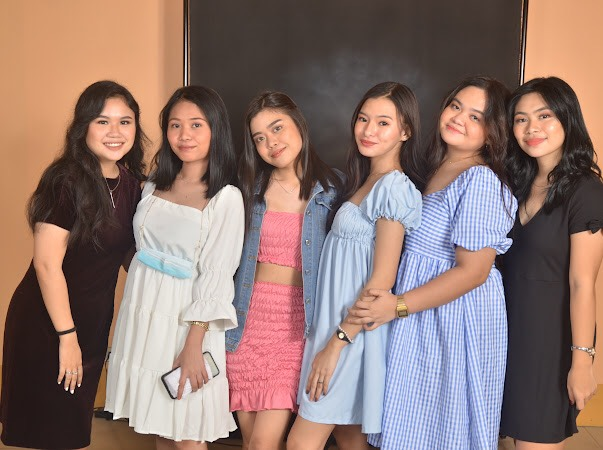
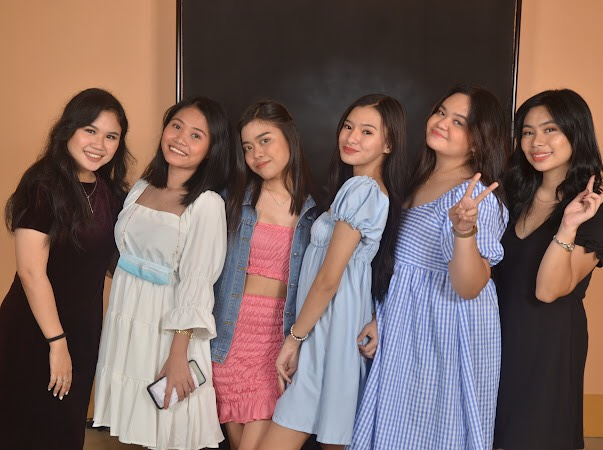
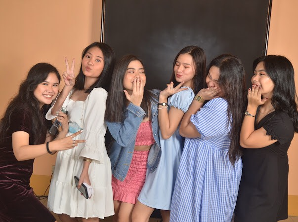
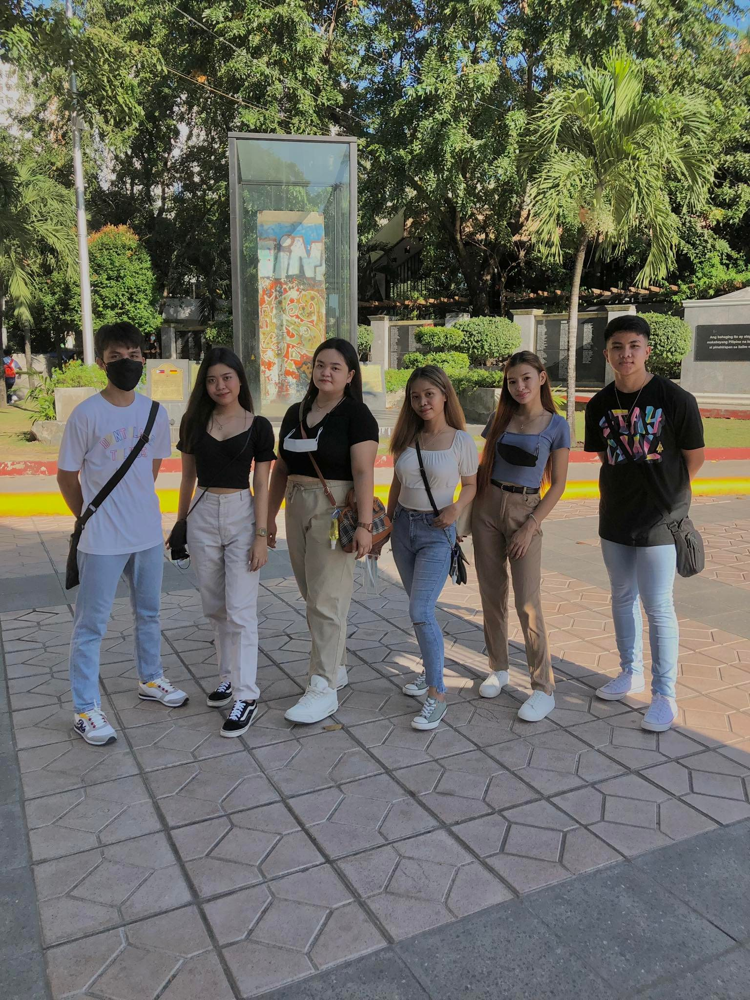
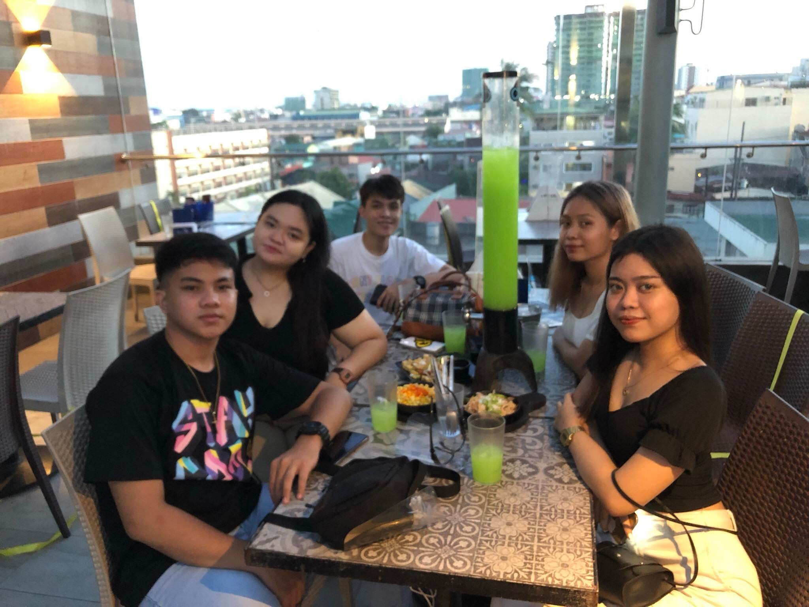

  
My most embarrassing experience was when I was in Senior High School. I remember when we're having a graduation pictorial. I was running late because of me being lazy. When I get there, I rushed to the pictorial room thinking that it was my turn. When I opened the door, people on that room was looking at me, like what fuck are you doing here girl? I was like, huh? I thought it was my turn. I left the room with my face all red. I was so embarass that time. I felt like soil eat me now!! I just came back when it's really my turn.
 
Another embarrassing experience for me would be when I was in Senior High again. When its our turn to get our allowance in school. Me and my friends are waiting for each other. After we got our allowance, we went to Mall of Asia to get drunk. I remember when we we're drinking my one friend vomit. The crew on the bar was looking at us like judging our whole existence. I never want to go back to that bar again. Like he was telling us to leave, and judging us like it was our first time to go there. My friend who vomit, has a low tolerance in alcohol.
I know you'll be back soon,
Ms. Allyssa